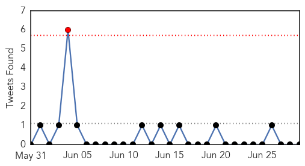
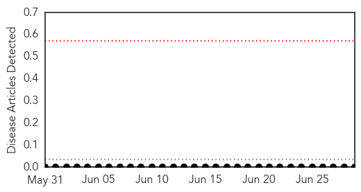

Unknown
30-Day Web Trend
0 alerts, 0 warnings

30-Day Twitter Trend
1 alerts, 0 warnings

Article Locations

Article Confidences

Top Articles:
- 0.953
- African Swine Fever Found in Latvia
- 0.917
- Chicago Tribune
- 0.917
- Chicago Tribune
- 0.917
- Chicago Tribune
- 0.917
- Chicago Tribune
- 0.917
- Chicago Tribune
- 0.917
- Chicago Tribune
- 0.883
- KRNV, Reno, NV
- 0.883
- KRNV, Reno, NV
- 0.883
- KRNV, Reno, NV
- 0.883
- KRNV, Reno, NV
- 0.875
- Killer dog disease detected in NSW
- 0.866
- Families, who fled from violence in Mosul, arrive on the outskirts of Arbil
- 0.866
- Netanyahu calls for supporting Kurdish independence
- 0.724
- Typhoid on one city road
- 0.714
- Implications of Finding Poliovirus in Sewers of Brazil and Israel
- 0.660
- Home ita
- 0.660
- Home ita
- 0.605
- Medicare could penalize local hospitals
- 0.565
- Why you should think before you ink Republican American
- 0.550
- Pakistan refugee crisis creates polio challenge
- 0.507
- Downtown health clinic expands to meet demand
Top Tweets:
-
No tweets found for Jun 29, 2014
Hemmorhagic Fever
30-Day Web Trend
0 alerts, 0 warnings

30-Day Twitter Trend
0 alerts, 0 warnings

Article Locations

Article Confidences

Top Articles:
-
No articles found for Jun 29, 2014
Top Tweets:
-
No tweets found for Jun 29, 2014